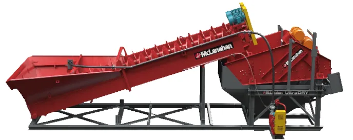
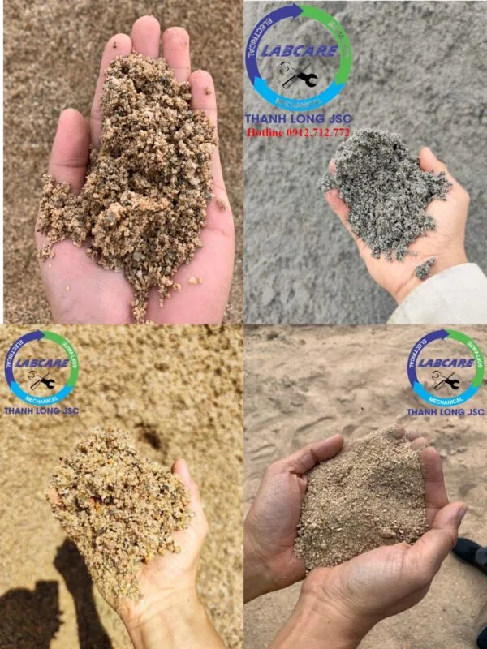
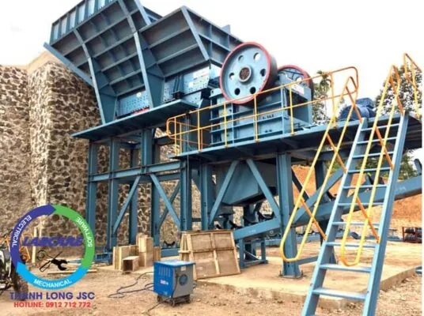
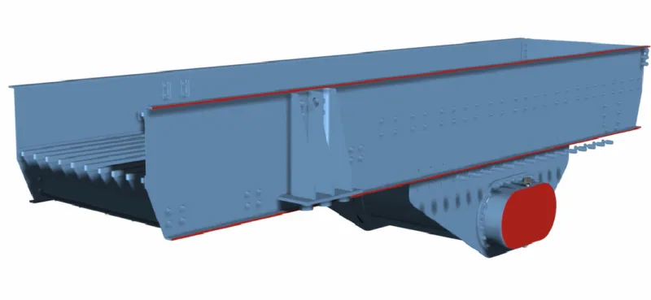
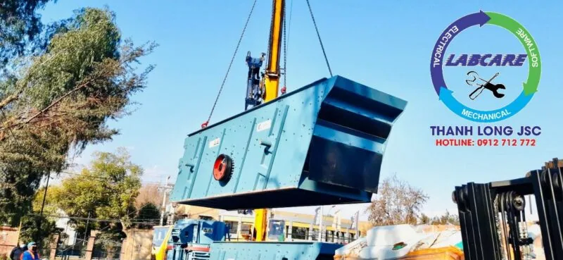

Bất cứ một công trình xây dựng lớn hay nhỏ đều không thể thiếu nguyên vật liệu xây dựng quan trọng là cát. Cát xây dựng là loại vật liệu dạng hạt, có nguồn gốc tự nhiên bao gồm các hạt đá và khoáng vật nhỏ mịn. Kích thước của hạt cát thường nằm trong khoảng 0.05 – 1mm. Cát được ứng dụng rất rộng và phổ biến là thành phần quan trọng trong xây dựng.
Trong xây dựng VLXD thô như: Cát, Đá, Gạch, Xi Măng, Sắt Thép, … Việc lựa chọn VLXD tưởng chừng như khá đơn giản nhưng thật sự bản chất của nó bao gồm rất nhiều thứ, nhiều loại, nếu nhìn sơ thì chắc chắn mọi người sẽ không hề biết được những vật liệu mình đang sử dụng là có tốt, chất lượng hay không?
Khái niệm cát xây dựng
Cát là một trong những thành phần cấu tạo rất quan trọng trong VLXD, được khai thác từ các mỏ cát mỏ đá tự nhiên. Lượng khai thác từ tự nhiên đang dần cạn kiệt, vì thế giá thành của cát hiện tại đang cao và khan hiếm.
Chất lượng cát xây dựng
Chọn cát có ít tạp chất và bụi bẩn sẽ giúp bạn hoàn thiện tốt nhất dự án xây dựng. Nếu vô tình bạn lựa chọn phải những loại cát chứa nhiều bụi bẩn, tạp chất nhiều sẽ tốn thời gian thi công dự án, chi phí nhân công tăng lên, gây ra mất uy tín trong các dự án tương lai vì thế phải sàng lọc ra hết các tạp chất, bùn,…trước khi thi công các dự án lớn nhỏ.
Tuy nhiên, những phương pháp thủ công sàng lọc qua lưới trên chỉ hạn chế được phần nào. Còn để đảm bảo tuyệt đối độ sạch cho cát xây dựng thì phải nhờ tới Thanh Long JSC. Họ có những thiết bị sàng rung phân loại cát, các thiết bị rửa và tận thu cát từ nước rửa với những công đoạn rửa cát, trộn cát chỉ có Thanh Log JSC mới làm được điều đó.
Lưu ý: Do cát biển có muối mặn nên sẽ gây ăn mòn cho các công trình bê-tông có cốt thép, nên không thể dùng cát biển để xây nhà.
Máy rửa cát xây dựng McLanahan dòng UltraWASH
Máy rửa cát McLanahan siêu sạch dòng UltraWASH được thiết kế và lắp sẵn các hệ thống dây điện, module, giúp việc lắp đặt và vận hành nhanh chóng. Cải thiện năng suất và chất lượng sản phẩm đầu ra.
Thiết bị rửa cát xây dựng UltraWASH McLanahan 0912712772
Thiết bị tách nước/làm khô cát xây dựng McLanahan dòng ULtraDRY
Thiết bị tách nước/làm khô cát McLanahan dòng ULtraDRY với thiết kế linh hoạt. Dễ dàng phù hợp với bất kỳ loại cát nào. Dẫn đến làm tăng được độ khô cho sản phẩm cuối cùng. Trong quá trình tách nước ra khỏi cát sử dụng bộ động cơ rung ngược chiều tạo ra chuyển động tuyến tính.

Máy tách cát mịn Thanh Long JSC thu hồi cát từ nước rửa cát xây dựng
Máy tách cát mịn TL – Giải pháp thu hồi vốn
6 bước Xác Định Cát Xây Dựng Chất Lượng
- Lấy 1 nắm cát rồi nắm tay lại, sau đó mở tay ra. Như thế thì chất bẩn, bụi, bùn sẽ dính vào tay giúp ta xác định được cát sạch hay bẩn. Cát xây dựng chất lượng là loại cát không chứa bụi bẩn, đất sét,mica, vỏ sò…Không nên chọn cát bẩn vì chúng ảnh hưởng rất nhiều vào chất lượng thành phẩm.
- Thả 1 nắm cát vào nửa bình nước thủy tinh, cát sẽ lắng xuống dưới, bùn bẩn sẽ nổi lên trên, bạn sẽ kiểm tra được hàm lượng cát bẩn trong cát xây dựng. Nếu hàm lượng bùn và bẩn vượt quá 3% tổng lượng cát khi bỏ vào thì cần làm sạch, sàng lọc trước khi sử dụng.
- Không nên sử dụng cát nhiễm phèn hoặc nhiễm mặn trong bê tông và VLXD. Nước có váng là cát dính dầu mỡ, nước có màu vàng là cát nhiễm phèn.
- Kinh nghiệm mua cát xây dựng: Cần chọn mua cát đúng với các mục đích vị trí cần xây dựng
- Cát hạt lớn dùng để đổ bê tông. Cát hạt trung để xây tường và tô tường, Cát hạt mịn dùng để san lấp nền móng. Ngoài ra còn sử dụng xây dựng công trình lớn như: Thủy điện, cao tốc, sân bay, tuyến đường mở rộng, …
- Khi chọn đơn vị cung cấp cát xây dựng, người mua phải xem họ đang sử dụng các loại thiết bị nước nào ? công suất ? Chất lượng ? Sản phẩm cuối cùng? … Tránh mất thời gian, công sức khi chọn thành phẩm kém chất lượng.
Vậy nếu hết nguồn cát tự nhiên để cung cấp cho ngành xây dựng thì vật liệu thay thế cát xây dựng tự nhiên là gì ?

Cát nhân tạo được nghiền từ đá granite, đá vôi, đá cát kết, sỏi sông, sỏi cuội, sỏi đồi, … Có khả năng đáp ứng những đòi hỏi khắt khe trong cấp phối bê tông. Ngoài ra, cát nhân tạo không chỉ được dùng trong xây dựng mà còn dùng để sản xuất gạch xi măng cốt liệu, loại vật liệu không nung thay thế gạch thủ công trong thời gian tới, gạch block, gạch không nung, làm VLXD cho các dự án sân bay Long Thành, cao tốc Bắc Nam, Cao tốc Tây Nguyên – Nam Trung Bộ, cao tốc Hà Nội – Thái Nguyên – Chợ Mới (Bắc Kạn).
Trạm nghiền cát xây dựng có thiết bị gì ?
Máy kẹp hàm SJC

Cấp liệu rung dòng SZ từ nhà sản xuất SRH

Máy nghiền côn SCH

Sàng rung phân loại dòng SS từ nhà sản xuất SRH

Máy nghiền cát / máy vo đá dòng SV \ SRH

Nhấc máy lên và liên hệ với chúng tôi Zalo, hotline: 0912 712 772
Thanh Long JSC chuyên cung cấp:
- Dây chuyền nghiền cát/đá cố định: Máy kẹp hàm, máy nghiền côn, sàng rung phân loại, máy nghiền cát nhân tạo VSI, …
- Dây chuyền nghiền cát/đá di động: máy kẹp hàm di động, máy nghiền côn di động, sàng rung phân loại di động, máy nghiền cát nhân tạo VSI di động,..
- Công nghệ rửa/tách:: Máy rửa cát theo module, sàng rung tách nước, máy tuyển rửa cát, máy tách cát mịn, máy thu hồi cát mịn…
- Vật tư, thiết bị phụ tùng: Dao nghiền, lưới sàng, má kẹp hàm, nón côn, …
Liên hệ với Thanh Long JSC:
Kênh video Youtube:
Page Facebook: Công Nghệ Máy Nghiền Đá
Website: https://thegioimaynghienda.com https://labcare.com.vn/
#bn